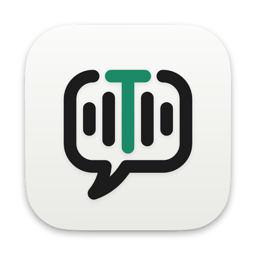

Transcripted for Mac
Transcripted writes down every word of your meetings and dictation, privately on your Mac, and saves them as simple files you keep.
Free · No account · For Macs with Apple chips (M1 or newer) · macOS 26 or later

How it works
Hit record on a call or start dictating. Both sides of the call, captured on your Mac.
Every word lands in a plain Markdown file with timestamps and who said what.
Point your AI at the folder and ask what was promised. It quotes the file.
# Weekly sync ## Action items - Maya sends the pricing draft by Friday [00:04:12] Maya: I can have the pricing draft over by Friday. [00:04:19] You: Perfect. Loop in Dev once it's ready.
Every word is written down by your Mac itself. Nothing is sent anywhere.
Other note-takers send a bot into your meeting. Transcripted just listens from your Mac.
Clean notes with timestamps, speakers and action items, saved as plain Markdown.
Your notes are just files, so an assistant like Claude can read them straight off your Mac.
Transcripted runs entirely on your Mac, so there are no server bills to pass on to you.
Download Free for Mac